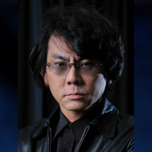
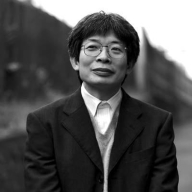

Hiroshi Ishiguro es un científico e ingeniero japonés reconocido mundialmente por su trabajo en el campo de la robótica y la inteligencia artificial.
A lo largo de su carrera, Ishiguro ha sido pionero en la creación de robots humanoides con apariencia y comportamiento similares a los humanos.
Sus creaciones, conocidas como "androides", han recibido una amplia atención y reconocimiento internacional.
Sobre el Proyecto: "ROBOT PERFORMING ARTS"
Dentro de este proyecto, Ishiguro ha creado diversos androides que participan en actuaciones teatrales y performances. Estos robots están diseñados para tener una apariencia y comportamiento similar al de los seres humanos, lo que permite que las interacciones que se dan sean de carácter realista tanto con los otros actores, como con la audiencia.
Un ejemplo de este proyecto, vendría siendo el Geminoid, este es uno de los androides más conocidos desarrollados por Ishiguro en el marco de este proyecto. Este consiste en una réplica robótica altamente realista del mismo Hiroshi, tiene la capacidad de imitar gestos faciales y movimientos corporales con gran precisión. El Geminoid ha sido utilizado en diversas presentaciones teatrales, donde interactúa en tiempo real con actores y audiencias.
Sus creaciones y experimentos continúan empujando los límites de la interacción entre humanos y robots, y explorando nuevas formas de expresión artística en el teatro, abriendo así nuevas posibilidades para nuevas tecnologías.